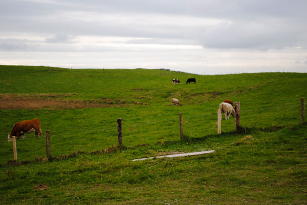
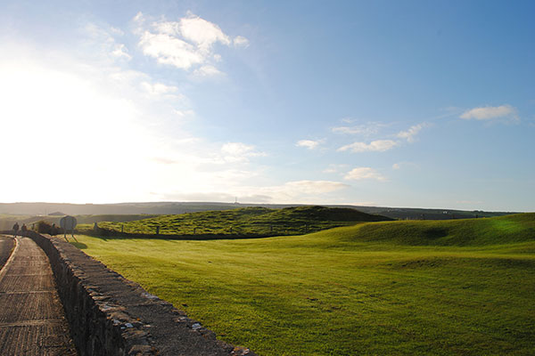
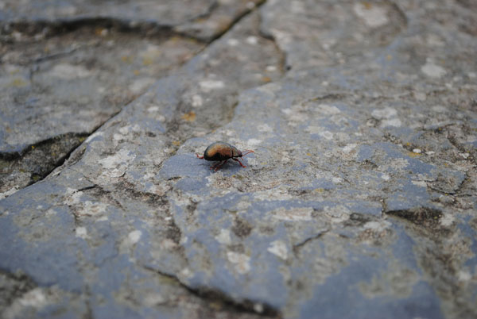
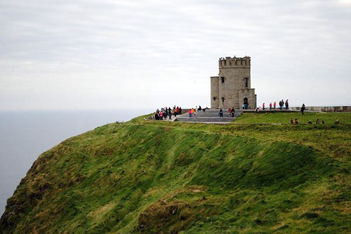
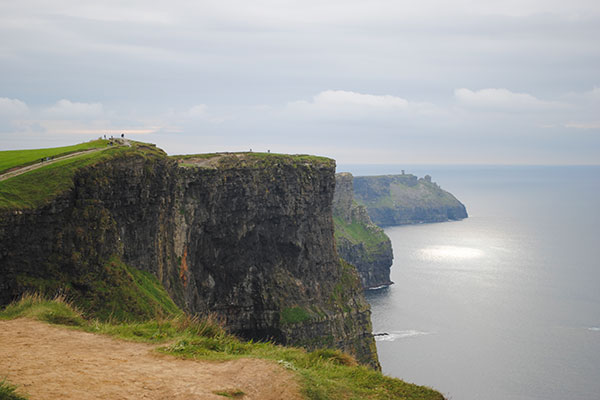
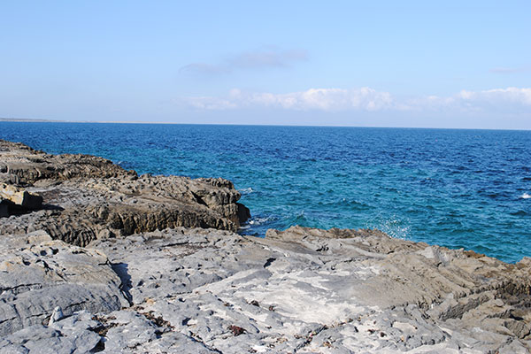
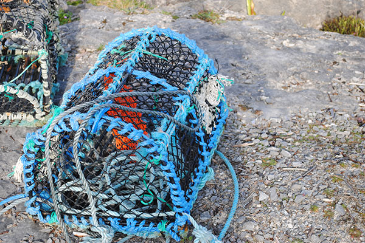
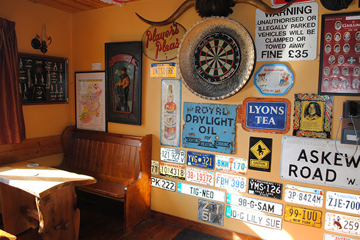

Doolin - October 13, 2013
“My heart is quite calm now. I will go back.” - James Joyce
If Dublin was energetic and stimulating, Doolin was quiet and calming. It was the perfect antidote to life in the city.
 Everything about Doolin was warm and inviting -- the friendly proprietor at our B&B, the picturesque landscape that stretched for miles out to sea, and the local pub that hosted musicians every evening, gathered around a table like old friends.
 We spent the days wandering, taking in the jaw-dropping views from the Cliffs of Moher, and visiting the nearly uninhabited Aran Islands.
  Where we stayed
Daly's House B&B - http://www.dalys-doolin.com/
Where we ate
Gus O'Connor's Pub - http://www.gusoconnorsdoolin.com/